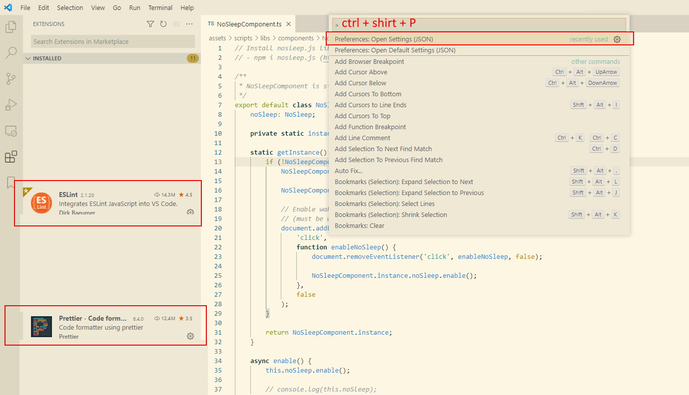
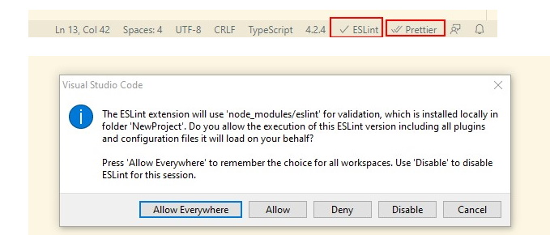
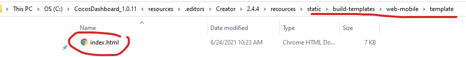
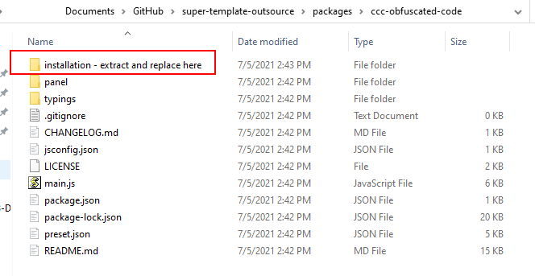

Installation and Setup of Super-Template
Getting Super-Template installed and ready-to-go should only take a few minutes.
Local Installation
Requirements
Clone the Super-Template from Github.
Install NodeJS, Install all npm dependencies package
# Install all dependencies of this project (the project only depends on TypeScript + ESLint related dependencies, used to standardize the project and improve code quality) npm i --save-devIt is recommended to use Visual Studio Code as the code editor.
Requirement install the VSCode plugin ESLint and Prettier. After the installation is complete, open VSCode
settings.json(Ctrl + Shirt + P to open settings (JSON))，paste the following code"eslint.alwaysShowStatus": true, "eslint.format.enable": true, "eslint.validate": [ "javascript", "javascriptreact", "typescript", "typescriptreact" ], "editor.defaultFormatter": "esbenp.prettier-vscode", "editor.formatOnSave": true, "search.exclude": { "**/node_modules": true, "**/bower_components": true, "build/": true, "temp/": true, "library/": true, "**/*.anim": true }, "files.exclude": { "**/.git": true, "**/.DS_Store": true, "**/*.meta": true, "library/": true, "local/": true, "temp/": true }
Install plugins and where to open settings.json as bellow show.

Make sure plugins is enable in project as bellow show.
Open any typescript file and click on Eslint and Prettier wording at bottom right of VScode editor to trigger popup show at bellow.

Recommended to use Google TypeScript style guide
Please make sure projects is RUNNABLE and NO ERROR when in local preview
Setup Cocos Creator
Download Cocos Creator version 2.4.4

Add Super-Template project to Cocos Dashboard

Replace default Cocos Creator
index.html. Backup default index.html just in case. Download3.1 Click 'App' to open Cocos Creator folder

3.2 Find the
index.htmlat bellow location and replace it How to fix
ccc-obfuscated-codeissues

- When init project might see this error above

- Extract the files, copy and paste to same directory. Restart again cocos creator.